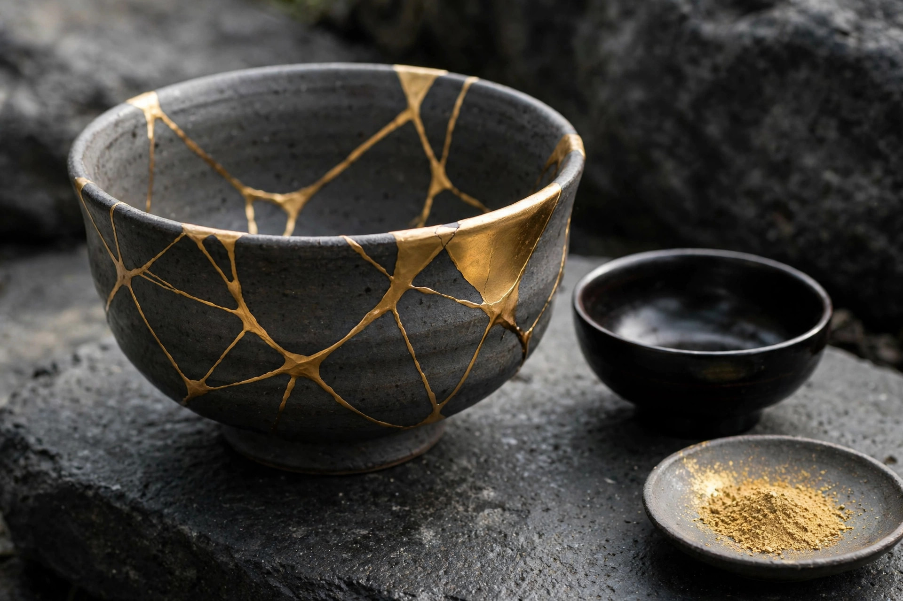

金継ぎの費用相場 ― 自分で直す場合と修理依頼の場合

結論
金継ぎの費用は、自分で直す場合はキット代が数千円〜2万円前後、プロへ依頼する場合は1点おおむね1万円〜数万円が目安です（いずれも一般的な目安で、器や状態で変動します）。金額だけでなく、時間と失敗リスクを含めて選ぶのが大切で、思い入れのある器は依頼、練習は安い器から始めるのが無難です。
割れた器を捨てずに直す金継ぎ。始めてみたいけれど、まず気になるのが費用ではないでしょうか。自分で直すのと、職人や修理店に頼むのとでは、かかる金額も、手間も、仕上がりの確実さも大きく違います。この記事では両者の費用相場の目安と、選ぶときの判断軸を整理します。
費用の比較 ― 自分で直す vs 修理依頼
| 項目 | 自分で直す場合 | プロへ依頼する場合 |
|---|---|---|
| 費用の目安 | キット代 数千円〜2万円前後が目安。材料が足りなくなれば追加購入が必要 | 1点おおむね1万円〜数万円。大きさ・割れ方・金粉の使用量で変動 |
| 時間 | 作業と乾燥待ちで数日〜数週間。自分のペースで進められる | 預けるだけだが、納期は数週間〜数か月かかることもある |
| 仕上がり | 経験に左右される。継ぎ目の線の太さや平滑さに差が出やすい | 安定した仕上がりが期待できる |
| 失敗リスク | 接着後のやり直しが難しい工程がある | 基本的に任せられる |
表の金額はあくまで一般的な目安です。依頼の場合は、ひび1本だけの器と、バラバラに割れて欠けもある器では作業量がまったく違うため、写真を送って見積もりを取るのが確実です。仕上げに本物の金粉を使うか、代用粉を使うかでも費用は変わります。
金額以外で比べたい3つの判断軸
1. 時間コスト
本漆を使う金継ぎは、漆を塗っては湿度のある環境で硬化を待つ工程の繰り返しです。作業そのものは短くても、全体では数週間かかることがあります。「直す過程を楽しめるか」が、自分で直すかどうかの一つの分かれ目です。
2. 失敗リスクと器の価値
接着してしまった後の修正は容易ではありません。形見の器や、作家ものの器など、失敗できないものはプロへの依頼が無難です。逆に、日常使いの量産品やフリーマーケットで手に入れた安い器は、練習台として最適です。
3. 直したい点数
- 1点だけ直したい：キットを揃えるより依頼の方が割安になる場合があります。
- 何点も直したい・趣味にしたい：キットは使い回せるため、点数が増えるほど1点あたりの費用は下がります。
- 食器として使い続けたい：材料の食品安全性も含めて選ぶ必要があります。
迷ったときの考え方
「その器が二度と手に入るかどうか」で考えるのが分かりやすい基準です。替えのきかない器は依頼、替えのきく器は自分で挑戦。そして自分で直す楽しさに目覚めたら、少しずつ道具と材料を揃えていく。費用は目安として幅を持って捉え、最終的には器の状態を見て判断してください。
研屋では、天然砥石とあわせて漆・金継ぎ材料の仲介も行っています。材料選びで迷ったら、金継ぎ材料のご案内（事業紹介）をご覧ください。砥石をお探しの方は砥石データベースもどうぞ。具体的なご相談はお問い合わせから受け付けています。
よくある質問
- 金継ぎを自分でやる場合、費用はどのくらいかかりますか？
- キット代が数千円〜2万円前後が目安です。接着用の漆や金粉代わりの材料が不足すれば追加購入が必要になる場合もあり、総額は器の大きさや点数によって変わります。
- プロに金継ぎを依頼すると、いくらくらいかかりますか？
- 1点おおむね1万円〜数万円が目安とされます。器の大きさ、割れ方や欠けの数、金粉の使用量によって変動するため、見積もりを取ってから判断するのが確実です。
- 思い入れのある器は自分で直しても大丈夫ですか？
- 接着のやり直しがきかない工程もあるため、失敗できない器はプロへの依頼が無難です。まずは安い器や練習用の器で手順に慣れてから挑戦することをおすすめします。
- 金継ぎにはどのくらい時間がかかりますか？
- 本漆を使う場合、漆の硬化を待つ工程が繰り返し入るため、数週間かかることもあります。合成うるしの材料では短期間で進められるものもありますが、仕上がりや用途が異なります。